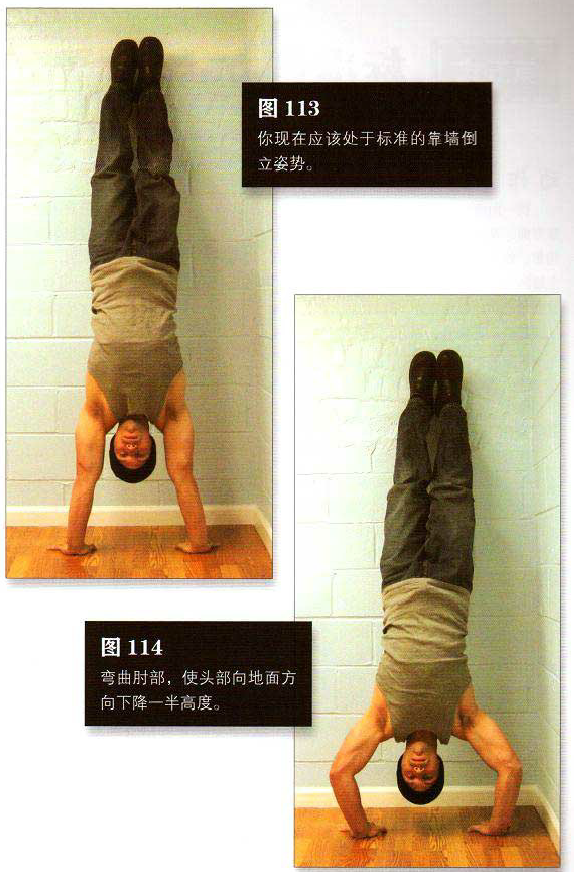

找一堵墙，双手手掌平放在距离墙根约 15一 25 厘米的地面上，双手与肩同宽。手臂尽量伸直，蹬起成靠墙倒立姿势（第三式）。你现在应该处于标准的靠墙倒立姿势——手臂伸直，身体收紧，背部略微向内弓，脚跟与墙壁轻轻接触。这是该动作的起始姿势（图 113）。
然后弯曲肘部，使头部向地面方向下降一半高度。这是该动作的结束姿势（图 114）。暂停一下，然后稳稳地推起身体，回到起始姿势。整个动作的运动幅度大约只有 15 厘米。刚开始练习时不要误判距离，让身体降得太低。整组练习中保持平缓呼吸。
初级标准：1 组，5 次
中级标准：2 组，各 10 次
高级标准：2 组，各 20 次